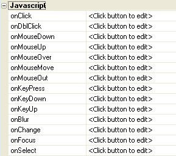

Javascript
Property name: 'JavaScript' ('Grid Properties->Javascript - Row Events' and 'Grid Fields->Field properties->Javascript' panes)
Define Javascript event handlers at the control level and the row level. The Javascript can make an arbitrary ajax callback to validate data, obtain new data, populate a select box, etc. This provides the capability to create cascading lookups.
Common uses:
-
Define an 'on
change' event for a textbox control. -
Define an 'on
dblclick' event for when a user double clicks on a row in the grid. -
Define an 'on
select' event for a dropdown control to execute an Ajax callback to populate another control such as another dropdown. -
Define client side validation to execute when the user leaves a control by using the 'on
blur' event. -
Define an event to make an Ajax callback to populate other fields based on an entered field value, such as filling in City and State after a zip code has been entered and the user leaves the field.
|  |
|
Javascript events supported for fields |